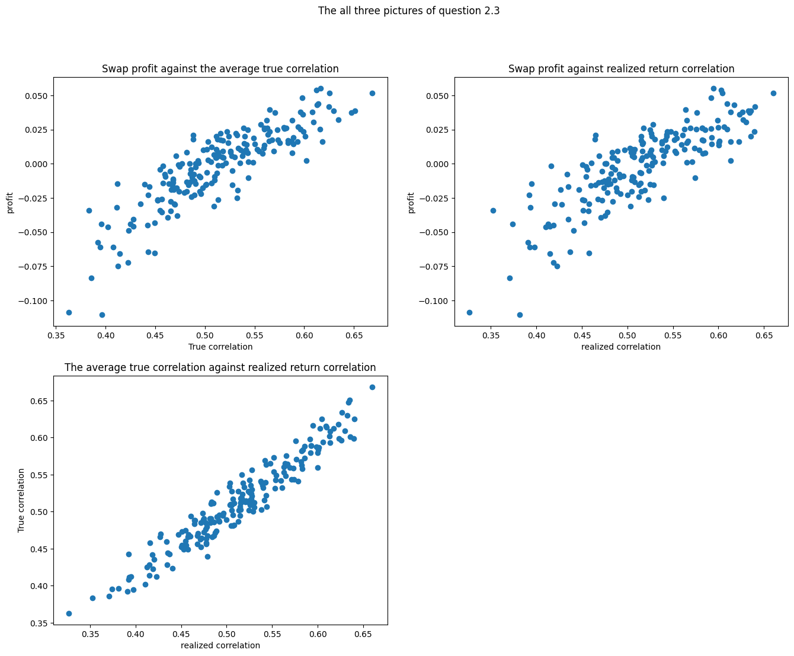
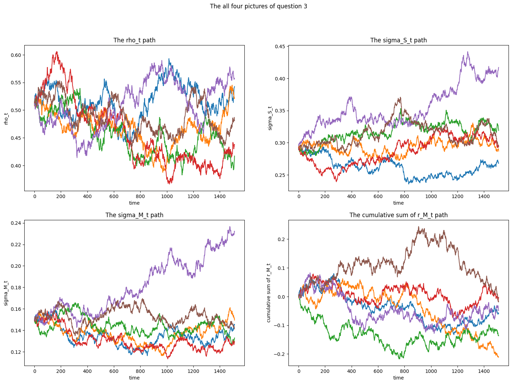

And based on stochastic calculus, we can know that: E(dW3t)=E(dW4t)=0,E(dW3t2)=E(dW4t2)=dt
Under the risk neutral condition: E(df)=2fdt
So we get our answer: ∴rf=∂t∂f+KI(σIˉ−σtI)∂σ2∂f+21bI2σtI2∂σtI2∂2f+KM(σMˉ−σtM)+21bM2σtM2∂σtM2∂2f
Question 2
Question 2.1
As we know the params like μS=μM=0,KI=KM=2 and so on. Given these conditions I can use the previous dSM and dSt=0 to calculate the new values of SM and St=Δt, which means we can also use these params to update σtI,σtM
There are following equations are used to update values: VtS=σtI∗dW1t+σtM∗dW2t,VtM=σtM∗dW2tdσtI=2∗(0.25−σtI)dt+0.5∗σtIdW3tdσtM=2∗(0.25−σtM)dt+0.5∗σtMdW4tσt+1I=σtI+dσtI,σt+1M=σtM+dσtM
Question 2.2
So using python we can calculate the results of these three parts and I picked first ten of the array to show my result and each of them are reserved four decimal places:
part A Answer: [ 0.0176 -0.0111 -0.0356 -0.0077 -0.0311 -0.0229 -0.0258 0.0101 0.02 0.0267]
part B Answer: [0.5156 0.4679 0.4567 0.4599 0.5092 0.4892 0.4564 0.4982 0.6012 0.5794]
part C Answer: [0.0027 0.0024 0.0024 0.0022 0.0025 0.0025 0.0023 0.0025 0.0032 0.003 ]
Question 2.3
And Here are the scatter plots

Q&A:
What is the breakeven correlation for the trade?
The breakeven correlation for the trade is the return which is equal to 0. And get the average of true correlation and realized sample correlation is shown below. And I choose the true correlation value as breakeven correlation which is 0.5041475659362336.
If you do the trade for a notional amount of $10 million, how much do you make or lose if correlation is 0.10 higher/lower than the breakeven value?
If trade 0.1 higher than breakeven value, you can make 398074.0502668916 profit
if lower 0.1 than breakeven value it will lose 682074.9049327854
Question 3
Here are the plots of the time series realizations

Q&A:
How well does the model capture the empirical facts alluded to in the Bloomberg article?
According to the model and the Bloomberg article, it appears that the model captures the empirical facts to a certain degree. The primary finding in the article is that the VIX decreases while realized correlation remains high. The second main finding highlights their similar trends. The two-factor stochastic volatility model can partly explain these observations, with σtM representing the VIX mentioned in the Bloomberg article.
Based on the model, σts=((σtI)2+(β∗σtM)2) and ρt=β∗σtM/σts. This implies that the correlation between the two is influenced not only by σtM, but also by σts and β. This relationship could result in lower VIX values accompanied by high correlation. Based on these observations, we can infer that the model exhibits directional correlation. Nevertheless, it allows for higher profits in up markets compared to down markets. It is not possible to determine whether higher correlation is observed when market volatility increases, as the VIX in this model is influenced by various factors.
Question 4
Q&A:
Using your findings from Question 2, and the column showing the realized vols over the subsequent 60 trading days to 8/26/20, estimate how much money you would have made/lost if the notional value of the market vol swap was $10 million
As the index vol swap means that start at 08/26/2020,I will pay the rate at 22.8% and get a rate at 20.1%. The net payment of mine would be 22.8-20.1=2.7%. By selling individual volatility swaps on the index components, each with equal proportions summing to one, the following results are observed on August 26, 2020: A payment rate of 25.83% is required, corresponding to the simple average of the 60-day historical volatility for the component sector ETFs. Meanwhile, a received rate of 27.4% is calculated, based on the simple average of the implied volatility for the component sector ETFs as of May 26, 2020. This leads to a net payment of -1.57%.Taking both trades into account, the total payment comes to 1.13%. Consequently, a loss of $113000
What do your results imply about the observations in the Bloomberg column from May 26?
The realized correlation between May 26 and August 26 is lower than the obserbations in the Bloomberg column.